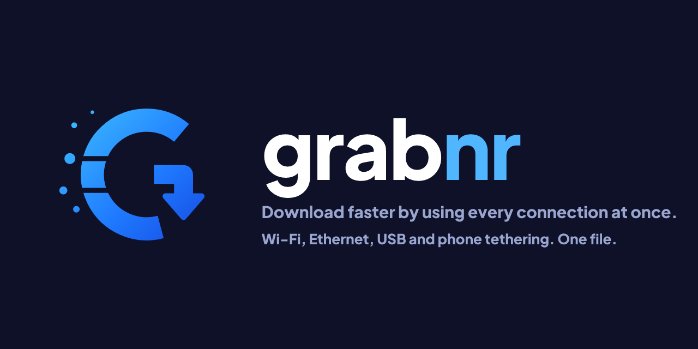

ubuntu-24.04-desktop-amd64.iso3.1 / 5.9 GB · 4 min left
142MB/s combined
Ethernet
86 MB/sWi-Fi
44 MB/siPhone USB
12 MB/sgrabnr uses Wi-Fi, Ethernet, USB and phone tethering at the same time. Each file is split into pieces and every connection pulls from the same queue, so faster links take more.
// An illustration of the interface. Speeds are an example, not a benchmark.
A browser sends a download down a single route. grabnr binds a worker to each network interface, so every link carries part of the same file.
grabnr lists your Wi-Fi, Ethernet, USB tethering and cellular links with their address and gateway. VPN tunnels are left out by default.
The file is divided into chunks in one shared queue. A worker on each link takes the next chunk, so a faster link simply takes more of them.
Slow or stalled connections are raced and replaced near the end. Links can join or leave mid-download, and the file is checked when it is done.
HONEST NOTEBuilt with Tauri 2 and Rust, so the installer is small and memory use stays low.
Every enabled connection pulls from one queue. Set a share or a speed limit per link, and let new links join mid-download.
Progress inside a piece survives pauses and crashes. Finished pieces are verified by checksum on resume.
Plug in a phone mid-download and it joins. Unplug one and its work moves to the others.
Hands downloads from Chrome, Brave, Edge, Firefox and Safari to the app. If grabnr is closed, the browser downloads normally.
Priorities, drag to reorder, rules by day and hour, and an action when everything is done.
Verify SHA-256, SHA-1 or MD5. Add mirrors and Metalink files for more sources and a built-in hash.
Chosen in preferences or from your system language.
The grabnr CLI uses the same engine. Script it, or run grabnr spike to test that traffic really leaves through each link.
No account and no telemetry. The local API listens on 127.0.0.1 only and refuses requests from web pages.
Free for macOS, Windows and Linux. Pick your system below, or see every build on GitHub.
Builds are attached to each GitHub release.
↓ Download Checking the latest release…| macOS | Linux | Windows | |
|---|---|---|---|
| Keeps a download on its connection | strong binding | strong binding | by source address |
| Menu bar / tray | popover | tray menu | popover |
| Dock progress, Keychain, Quick Look | yes | — | — |
| Tested in CI | build, tests, UI | build, lint, tests | build, tests |
// Builds are not yet code-signed, so macOS and Windows may warn on first launch (see the guides below).
// Prefer building yourself? npm install && npm run tauri build
.dmg for your chip (Apple silicon or Intel) and drag grabnr to Applications..exe or .msi installer. If SmartScreen appears, choose More info → Run anyway..deb or .rpm, or run the .AppImage.127.0.0.1:17653).chrome://extensions (Brave and Edge work too), enable Developer mode and choose Load unpacked.extension/ folder from the repository. There is nothing to pair.# list your connections grabnr links # download over every link grabnr get https://proof.ovh.net/files/100Mb.dat -o ~/Downloads # only some links, with a speed cap and checksum grabnr get URL --only en0,en5 --limit 20 --checksum sha256:<hex> # check that traffic really leaves through each link grabnr spike --secs 8

grabnr is MIT licensed and developed in the open. Found a bug or want a feature? Open an issue or send a pull request.